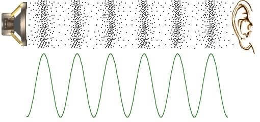

Ses Dalgaları
Ses, canlıların işitme organları tarafından algılanabilen periyodik basınç değişimleridir. Fiziksel boyutta ses, katı, sıvı veya gaz ortamlarda oluşan basit bir mekanik düzensizliktir. Bir maddedeki moleküllerin titreşmesi sonucunda oluşur.Ses bir enerji türüdür. Ses titreşimle oluşur, titreşimi enerjiye dönüştürür. Sesin kuvvetine gürlük denir ve "Desibel (dB)" ile ölçülür. Örneğin kalkış yapan füze 120 desibel ses üretir. Yüksek sesli müzik 90 desibel üretir. Normal insanın konuşması 50-60 desibel gücüne eşittir.

Sesin havadaki hızı yaklaşık olarak şu formül ile hesaplanır :
v = 331 + 0.6T